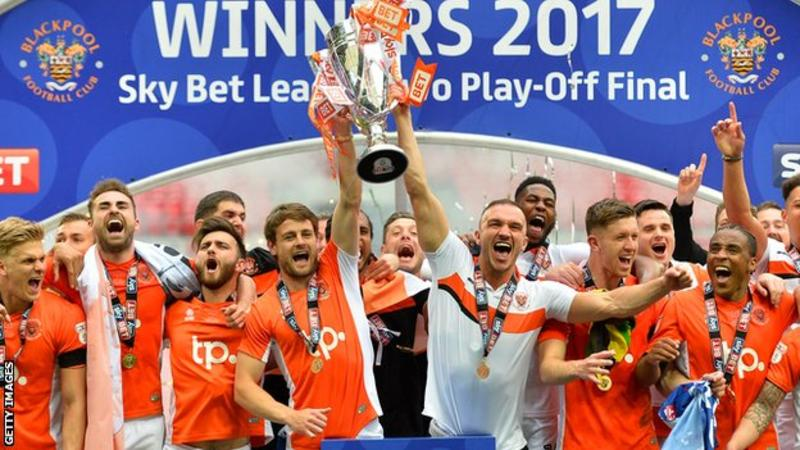
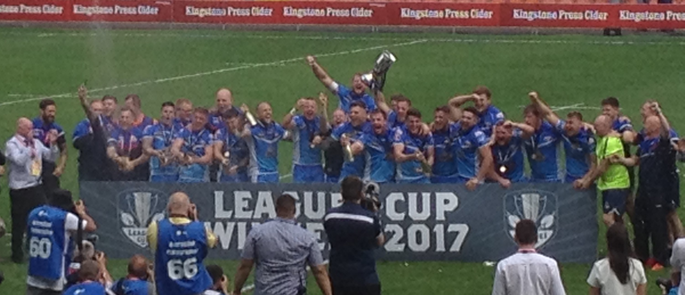

Need an excuse for a celebration?
28-May-2017 | Milku
Blackpool are back in League One.
We've just enjoyed seeing Blackpool FC winning the opportunity to play League One football next season. They won their game at Wembley against Exeter City by two goals to one. Well done, Seasiders!
Apparently, they used to play in the Premier League alongside Everton. I can't quite believe it, but I do look forward to seeing it myself.
Bloomfield Road, Blackpool FC's ground, had silverware on display yesterday afternoon. Not for football with a round ball though, but for rugby league football with a weird-shaped ball.
My humans saw Barrow Raiders beat North Wales Crusaders to win the League One Cup. Some of them were supporting Barrow so were celebrating.
I said my humans wouldn't sit through all the matches on offer. And I wasn't wrong. Even if they did have seats in the VIP area and were sitting with Rochdale Hornets players at one point. However, they did venture forth into the rain...yes summer is already over after a few sunny, hot days... to see the end of the London Broncos versus Featherstone Rovers match and all of the Hull Kingston Rovers versus Bradford Bulls game.
Once again, their support was split so only some of them were celebrating Hull KR's narrow victory. But they'd all had a great time watching the rugby and the crowd, especially a group of young men out on a stag party...all dressed up and singing about a pineapple!

Not long now to the start of 30 Days Wild. My whiskers are quivering with excitement.